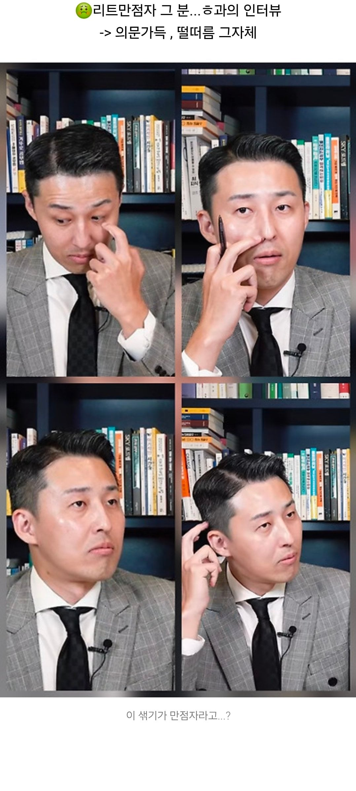
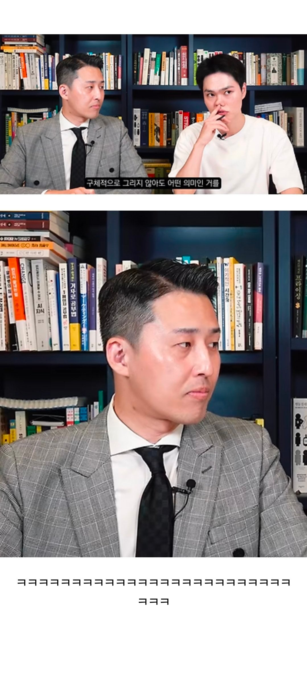
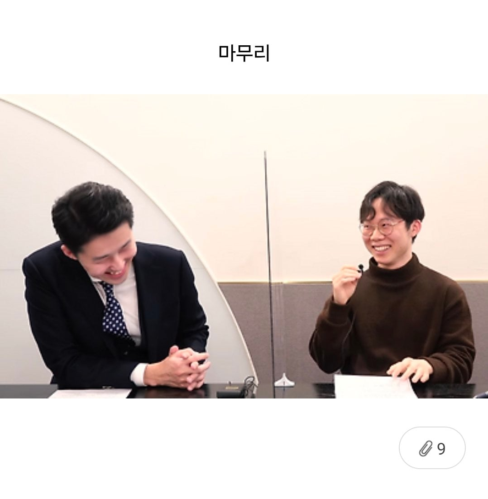

관상은 모르겠는데
저 얼굴상의 사람들은 80퍼이상이 표독하고
80퍼 이상이 자신이 하는 뭔가에 겐세이 넣으면 과하게 표현하고
80퍼 이상이 사이비와 같은 논리를 펼치더라
뭐 그렇다고.
변호사라 진짜 에지간한 미친새끼는 다 만나봤을텐데 저정도로 혼란해 하는건 ㅅㅂ ㅋㅋㅋㅋㅋㅋㅋㅋㅋㅋㅋㅋ
변호사로서 만난 건 그래도 어느정도 예상을 한 상태에서 만났을텐데 리트만점 고지능자가 저런 소리를 할 거라고는 상상도 못 했을듯
고득점자 바라보는 표정은 진짜 키스갈기기 직전 표정같네 ㅋㅋㅋㅋ
리트만점 저거 영상 예전에 봤을때 페러글라이딩 디지털 디톡스 이런거만보고 신기하다 이생각하고 넘어갔는데 ㅋㅋㅋ
나는 관상 어쩌고 하는거 그렇게 안좋아하는 편인데 쟤는 진짜 멀리하는게 좋을거 같음 뭔가 쌔함
표정이란게 그 사람의 사상과 행동거지에 따라 발달되기 때문에 100%는 아니라도 어느정도 느껴지는게 맞는 경우가 많지
40넘어가면 평소 표정이 얼굴에 박힌다곤 하더라
진지한 대화 좀 해보면 바로 다 까발려지지
저 리트냥이 인터뷰가 의혹 터지기 전에 한거임?
ㅇㅇ 근데 저때도 댓글에서 이상하다는 이야기가 많이 보이긴 했음
한 달 전인데도 사람들이 알맹이 없다고 느꼈음
우리같은 일반인이 봐도 말하는거에서 음? 싶은데 똑똑한 사람들은 오죽하겠어
ㄹㅇ 관상은 과학이지
아니 뭐 사랑에 빠졌음? ㅋㅋㅋㅋㅋㅋ 눈빛봐라
ㅋㅋㅋㅋㅋ
ㅋㅋㅋ 눈깔돌리시는거 ㅈㄴ 웃기다 어? 저거도 ai인가
고득점자 보는 표정 ㄹㅇ 얘 어떻게 꼬셔서 같이 일하지? 이거라고ㅋㅋㅋㅋㅋ
와 마지막 눈 따라해 봤는데
어떻게 저렇게 빠르게하지